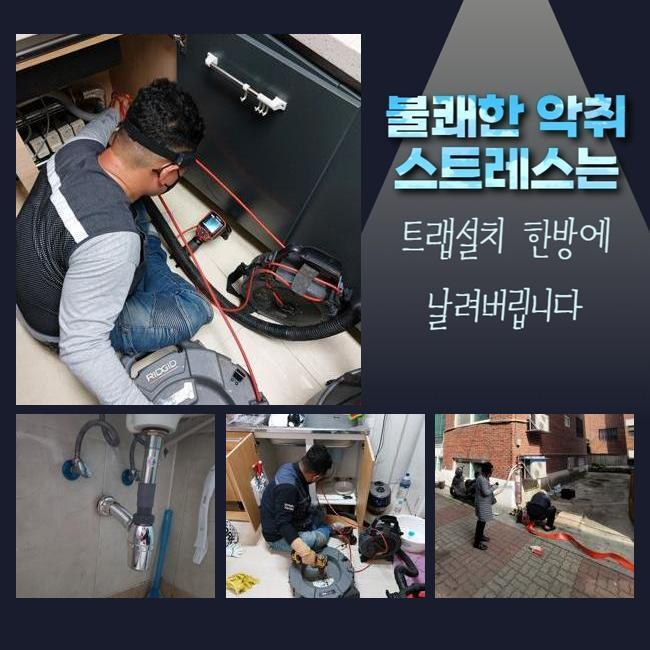
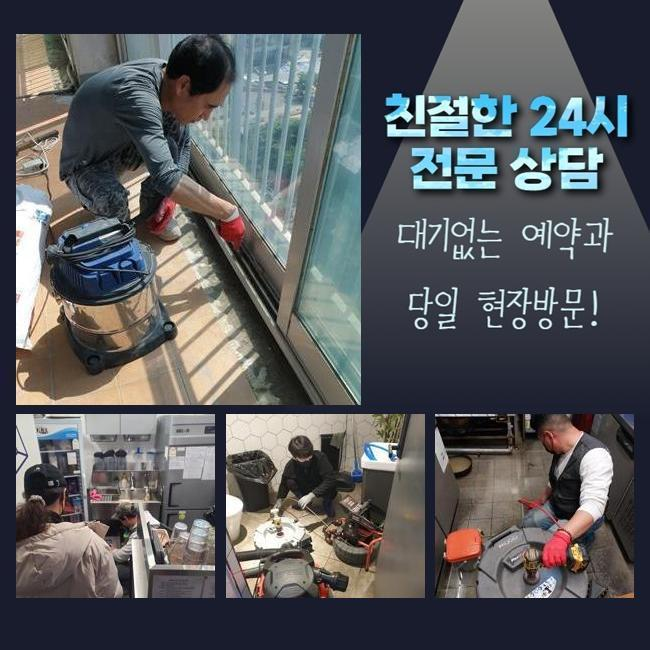
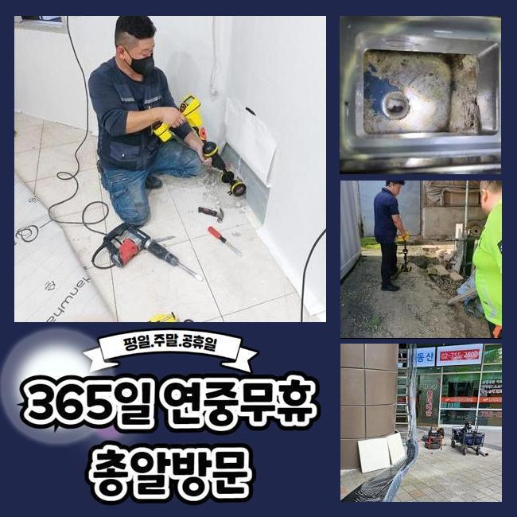
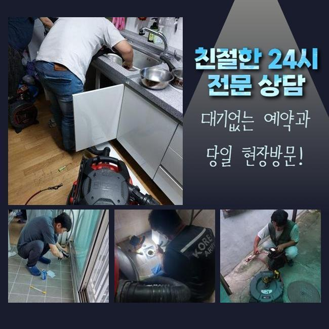
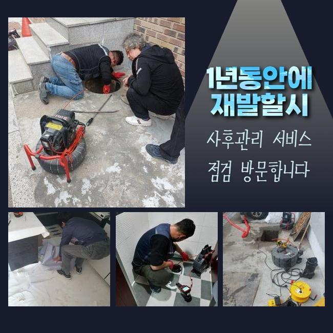
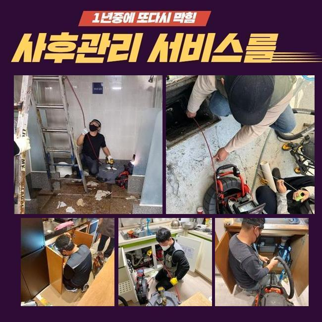

🏠 금천구 가산동씽크대배수구역류 시흥동 맨홀막힘 누수탐지
시흥 싱크대막힘 전문 시공 후기

📋 작업 개요
- 위치: 시흥
- 서비스 유형: 싱크대막힘, 하수구막힘, 배관막힘, 맨홀막힘, 누수수리, 역류해결, 배관청소, 고압세척
- 작업 일시: 2024. 10. 16. 11:56
- 업체명: 하수구수사대 (010-5615-2118)
🔍 문제 상황
금천구 가산동씽크대배수구역류 시흥동 맨홀막힘 누수탐지
며칠전 접수를 받고서 현장으로 방문드렸습니다
연립건물의 형태였죠 바깥쪽의 배관에서 솟구치는 증상이 나타나 저희들을 찾아주신건데요
증상이 가볍지 않은것으로 판단해 신속히 진단을 위한 절차들을 이행해보니 노후된 현장에서 하수도의 배수장애로 악영향이 꽤 불거졌음을 체크할 수 있었습니다
첫번째로 내시경기기로 하수도를 구석까지 조사했더니 여러가지의 흡착물들이 메인관 속에서 축적된 모습을 확인했습니다
하수구통수결함으로 악취들이 야기된 원인까지 알게되었어요
파생된 문제도 야기된걸로 보았을때 오래도록 여러 찌꺼기를 그대로 놔두어 나타난 상황들이였는데요

🔎 원인 분석
💡 전문가 진단: 정밀 진단 장비를 사용하여 슬러지의 고착 여부를 판명하고 타격/세척 작업을 실시했습니다.
간소하게 내측을 관찰해보니 쌓일대로 쌓여버린 잔해때문에 통수가 불가한 상태가 생겨난 걸로 판단했으나 오차없는 체크를 위해서 내시경기기를 운용해보기로 하였죠
내시경으로 하수도를 살피니 꺾이는 부분에도 석회가 덕지덕지였죠
오랜 시간동안 굳게된 잔해는 샤프트를 써주는 것이 옳지만 큰 사이즈와 퇴적량도 상당해서 고압청소 방법을 채택하기로 결론지었죠
고압노즐 방식으로 하수구를 청결케하는 과정들을 이행할 땐 연결부위 등에 침전된 이물질도 철저하게 사라지게해주었죠
평상 시 간소한 문제들에서 자주 가용하는 기기가 아니라 구경이 큰 관로나 샤프트장치를 사용했지만 개선점이 도드라지지 않을 시 이용해주는 장비인데요
이러한 세척 절차들을 이행하고자 할 때는 배수관의 특이사항 등을 고려해서 내구성에 따라 고압의 세기들을 조절하여 가해주는것이 좋아요
까닭은 고압노즐을 제거하기 쉬운 기름때나 내구성이 떨어진 개체에 쏘게 되면 깨짐의 가능성들을 배제할 수 없고 더 나아가 작업비등에서 비롯되는 지출들이 올라가므로 배보다 배꼽이 더 커지는 경우들도 존재합니다
고압청소방식은 강력한 분사과정을 거쳐 잔해를 정리하는 단계로 맨홀쪽에서 역순으로 진행했죠

🔧 작업 과정
관로의 수직구간과 벽쪽은 다량의 고착물이 잔존해있었죠
간단하게만 풀어갈 수 없기에 청소하는데에 예상보다 더 많은 시간들이 소요되지만 계속해서 수행해 참된 결과물을 만들었어요
하수설비에 흡착물들이 켜켜히 쌓인 증상이라면, 고압력 분사로 내부를 작업하는게 추천하는 히든카드라고 할 수 있어요
대응을 안해준다면 또다른 해당 피해가 생겨날지 모르기에 문제에 맞는 수습이 필요하겠습니다
그 이후에 내측을 내시경장치로 점검해 예상할 수 없는 이물질들을 확인해주었어요
잔재와 굳어버려 탈락된 석회들까지 남아있는 까닭에 석션으로 제거해 마무리까지 진행했는데요
다음으론 가지로 뻗어나간 하수관로를 진단해볼 심산이였습니다 찾아뵈었던 현장의 경우 빌라였고 오래도록 배수가 안되는 현상이 발생된 현장이였으므로 개별 라인으로도 통수오류가 번져있었습니다
다시금 원인들을 잠재우고 설명해주시기를 이쪽 말고는 불편이 없으시다고 말씀하셨으나 검수는 이행했어요
작업들이 완료된 시잠엔 예기치못한 위험군을 막고자 연결된 시스템의 점검을 실시했습니다
각 라인의 컨디션 복구를 위한 고수압의 방식은 주기적으로 이행하여 각 라인의 수명을 유지하고 손상이슈나 누수와 같은 증세들을 방지할 수 있어요
내시경장비는 기름을 뚜렷하게 체크하는 장치로 증상의 이유를 특정시키는데에 중요합니다
물들이 빠지지를 못해 전문업체들을 모색해야 될 때 눈여겨 볼 점이 내시경카메라를 이용하는지 따지시는게 좋겠습니다


✅ 작업 완료
작업한 뒤 동일 통수오류가 생겨나면 AS를 실시해 빠르게 대응할 수 있도록 작업과정을 이행하겠습니다
석션기기와 샤프트장치 고압세척기를 운용하여 이물들을 철저하게 청소해주고 전체적인 클리닝을 수행해요
청소 시에 나타나는 잔재까지 고압수청소로 정리해드리고 마무리 과정으로 하수설비에서 배수관의막힘을 해소합니다
그저 이물질들을 제거하면서 배관의 환경들을 청결할 수 있게 유지시킬 수 있게 작업들을 시행할게요



⚠️ 베란다 누수 및 방수 관리 방법
- ✅ 비가 많이 올 때 창틀 주변이나 아래층 천장에 얼룩이 생기는지 정기적으로 확인해 보세요.
- ✅ 우수관 주변 실리콘 마감이 들뜨거나 깨진 틈새가 있는지 손상 여부를 수시로 체크하세요.
- ✅ 베란다 바닥 타일의 줄눈(메지)이 소실되면 그 틈으로 물이 침투하여 누수가 유발됩니다.
- ✅ 누수 의심 증상 발견 시 방치하면 아래층 손실이 커지므로 즉시 전문가의 진단을 받으십시오.
💡 핵심 정리
- 확실한 장비 작업(내시경 점검 및 샤프트 스케일링)으로 원인을 뿌리 뽑습니다.
- 작업 후 1년 이내에 동일한 부위 재발 시 100% 무상 A/S 서비스를 보장합니다.
- 서울 · 경기 · 인천 전 지역에 24시간 언제든 긴급 출동할 수 있도록 항시 대기 중입니다.
❓ 자주 묻는 질문 (FAQ)
🚨 시흥 싱크대막힘 문제로 고민이신가요?
정확한 원인 진단과 확실한 시공으로 재발 없는 해결을 약속드립니다.
24시간 긴급 출동 | 서울 · 경기 · 인천 전지역 | 1년 내 재발 시 무상 A/S